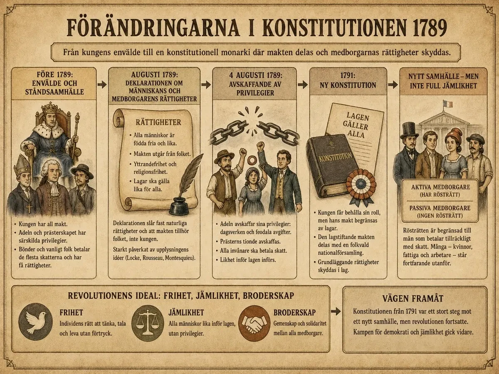

— rättigheter, folksuveränitet och en kompromiss som inte höll —
När franska revolutionen började 1789 ville många inte bara protestera. De ville också skapa ett nytt samhälle med nya lagar. En viktig grupp var Nationalförsamlingen , som växte fram ur det tredje ståndet. Deras mål var att skriva en ny konstitution — ett lands viktigaste lag som bestämmer hur landet styrs och vilka rättigheter människor har.
I augusti 1789 antog Nationalförsamlingen Deklarationen om mänskans och medborgarens rättigheter . Där stod att människor är födda fria och lika i rättigheter. Det var en radikal tanke — tidigare hade rättigheter berott på vilket stånd man föddes in i.
Deklarationen byggde på upplysningens idé om naturrätt : människor föds med grundläggande rättigheter som staten ska skydda, inte ta bort. Viktiga friheter var yttrandefrihet (rätten att säga vad man tycker) och religionsfrihet (rätten att välja sin tro). Det gamla systemet med censur och statens kontroll över åsikter började brytas ner.
När den franska revolutionen började år 1789 ville många människor förändra Frankrike i grunden. Det handlade inte bara om att protestera mot kungen, adeln och kyrkan. Revolutionärerna ville också skapa ett nytt samhälle med nya lagar och nya rättigheter.
Den grupp som fick en viktig roll i detta arbete var Nationalförsamlingen . Den hade vuxit fram ur det tredje ståndet, alltså den stora grupp i samhället som bestod av borgare, bönder och arbetare. Nationalförsamlingen tog på sig uppgiften att skriva en ny konstitution — ett lands viktigaste lag, som bestämmer hur landet ska styras, vem som har makt och vilka rättigheter människor har.
Målet var att Frankrike skulle gå från ett gammalt ståndssamhälle till ett nytt samhälle där människor räknades som medborgare . I det gamla samhället hade människors rättigheter berott på vilket stånd de föddes in i. Nu skulle lagen gälla lika för alla.
Ett mycket viktigt steg togs i augusti 1789. Då antog Nationalförsamlingen Deklarationen om människans och medborgarens rättigheter. Det var ett dokument som förklarade vilka grundläggande rättigheter människor skulle ha i det nya Frankrike.
I deklarationen stod det att alla människor är födda fria och lika i rättigheter . Det var en mycket radikal tanke i ett samhälle där adeln och prästerskapet länge hade haft särskilda fördelar. Nu menade man att människor hade vissa rättigheter bara för att de var människor . Detta kallas naturrätt . Tanken var att staten inte gav människorna dessa rättigheter, utan att staten skulle skydda dem.
Deklarationen byggde mycket på upplysningens idéer. John Locke hade skrivit om att människor har naturliga rättigheter. Rousseau hade betonat att makten ska utgå från folket. Montesquieu hade förklarat att makten måste begränsas och delas upp så att ingen får för mycket makt.
I augusti 1789, bara veckor efter att Bastiljen fallit, antog nationalförsamlingen ett dokument som skulle bli en av historiens mest inflytelserika texter: Deklarationen om människans och medborgarens rättigheter. Det var inte en lag i vanlig mening, utan något mer grundläggande — en förklaring av de principer som ett helt nytt samhälle skulle byggas på. För att förstå hur radikalt det var måste man läsa det mot den gamla ordning det ersatte.
Deklarationen slog fast att människor föds fria och lika i rättigheter. Den räknade upp rättigheter som frihet, egendom, säkerhet och rätten att göra motstånd mot förtryck. Den fastställde att lagen skulle vara ett uttryck för den allmänna viljan, lika för alla, och att makten ytterst kom från nationen — inte från en kung av Guds nåde. Var och en av dessa satser var en direkt utmaning mot l'ancien régime. Där det gamla samhället byggde på börd, privilegier och en gudomligt motiverad kungamakt, byggde deklarationen på förnuft, likhet inför lagen och folkets samtycke.
Det är lätt att se upplysningens tänkare mellan raderna. Lockes idé om naturliga rättigheter som staten ska skydda, Rousseaus allmänna vilja, Montesquieus tanke att lagen ska stå över den enskilde makthavaren — allt detta hade nu lämnat filosofernas böcker och skrivits in i grunden för en verklig stat. Idéerna du mötte i tidigare avsnitt var inte längre teori; de hade blivit ett politiskt program.
Men deklarationens verkliga sprängkraft låg i dess universella språk. Den talade inte om "fransmännens" rättigheter utan om "människans" rättigheter. Det gjorde den till något större än en fransk angelägenhet: en principförklaring som i teorin gällde alla människor, överallt. Just den universella ambitionen skulle senare bli obekväm för revolutionärerna själva — för om alla människor är lika, hur kunde man då fortsätta utesluta kvinnor, fattiga och förslavade? Deklarationen ställde en fråga den inte själv var beredd att besvara fullt ut, och den frågan skulle driva politiken i decennier framåt.
Före revolutionen hade kungen styrt som ett envälde — hans makt sades komma från Gud. Under revolutionen förändrades detta. Nu menade Nationalförsamlingen att makten skulle komma från folksuveräniteten : folket äger makten, och de som styr gör det med folkets tillåtelse. Kungen skulle inte längre styra ensam — han måste följa lagar.
Före revolutionen hade Frankrike styrts som ett envälde. Kungen hade haft mycket stor makt och man menade att hans makt kom från Gud. Detta brukade kallas gudsstat eller kungamakt av Guds nåde.
Under revolutionen förändrades denna syn. Nationalförsamlingen slog fast att makten skulle komma från folket. Det kallas folksuveränitet. Det betyder att det egentligen är folket som äger makten, och att de som styr gör det med folkets tillstånd.
Deklarationen innehöll också krav på yttrandefrihet och religionsfrihet. Människor skulle få uttrycka sina tankar och åsikter, och själva få välja sin tro.
Detta var viktigt eftersom människor tidigare hade kunnat straffas för sina åsikter eller för att de kritiserade kungen, kyrkan eller samhället. Under det gamla systemet hade censur varit vanligt — böcker kunde förbjudas och personer som spred förbjudna idéer kunde hamna i fängelse.
En annan viktig princip var att lagen skulle gälla lika för alla. Adeln och prästerskapet skulle inte längre ha särskilda rättigheter. Alla skulle vara medborgare inför samma lag . Det innebar att det gamla bördssamhället, där födelsen avgjorde människans plats i samhället, började brytas ner.
Den djupaste förändringen i revolutionens första skede var inte en enskild lag, utan ett byte av själva grunden för all makt. Under l'ancien régime kom makten uppifrån och utifrån: från Gud, genom kungen, ner till undersåtarna. Efter 1789 vändes den pilen. Nu skulle makten komma nedifrån — från nationen, från folket självt. Denna princip kallas folksuveränitet, och den är själva navet som allt annat snurrar kring.
Konsekvensen var enorm, för den förvandlade undersåten till medborgare. En undersåte är någon som lyder en härskare; en medborgare är någon som är delaktig i makten. Det tredje ståndet, som tidigare inte räknats politiskt trots att det utgjorde nästan hela befolkningen, gjorde nu anspråk på att vara nationen. När dess ledamöter förklarade sig utgöra nationalförsamlingen sa de i praktiken: det är vi, folket, och inte kungen, som är Frankrike. Kungen blev därmed inte längre statens ägare utan dess tjänare, en ämbetsman med uppdrag från nationen.
Här hör man tydligt Rousseau. Hans tanke att en stat bara är rättfärdig om den vilar på folkets allmänna vilja hade tidigare varit filosofi; nu blev den statsrättslig princip. Lagen skulle inte längre vara kungens befallning utan folkets vilja, uttryckt genom dess valda representanter. Det innebar också att ingen längre kunde stå över lagen med hänvisning till börd eller gudomlig rätt.
Men folksuveränitet väckte genast en svår fråga som revolutionen aldrig riktigt löste: vem är egentligen "folket"? Är det alla vuxna? Bara män? Bara de som äger något? När makten kommer från folket blir gränsdragningen för vem som räknas som fullvärdig del av folket den mest laddade frågan av alla. Revolutionärerna svarade, som vi ska se, med att dra en gräns som uteslöt stora grupper — och därmed lade de in en motsägelse i själva fundamentet för den nya staten.
Nationalförsamlingen avskaffade många gamla feodala privilegier. Adeln förlorade rätten att kräva avgifter och dagsverke (gratis arbete) från bönderna. Det berodde delvis på att bönderna själva hade gjort uppror och bränt dokument. Kyrkan förlorade också makt — tiondet (kyrkans skatt) avskaffades och alla började betala skatt. Det gamla bördssamhället , där din familj avgjorde din plats i samhället, började brytas ner.
Samtidigt som Nationalförsamlingen skrev om rättigheter fattade den också praktiska beslut som förändrade samhället. Natten mellan den 4 och 5 augusti 1789 avskaffades många av de gamla feodala privilegierna.
Det betydde att adeln förlorade flera av sina gamla rättigheter över bönderna. Tidigare hade bönder ofta behövt betala avgifter till godsägare eller utföra arbete åt dem, till exempel dagsverken . Dessa skyldigheter var rester från det gamla feodalsamhället.
Att privilegierna avskaffades berodde inte bara på god vilja från adeln. Det skedde också under starkt tryck från revolterna på landsbygden. Bönder hade börjat protestera mot adelns makt, bränt dokument och krävt att gamla skyldigheter skulle tas bort. Nationalförsamlingen tvingades därför agera.
Augustidekreten visar hur revolutionens idéer (jämlikhet inför lagen) och folkets handlingar (bondrevolterna) påverkade varandra. Utan upproren hade beslutet inte kommit så snabbt. Utan idéerna hade förändringen inte fått sin riktning.
Även kyrkans makt minskade kraftigt under revolutionen. Före revolutionen hade kyrkan varit mycket rik och haft stor betydelse i samhället. Bönderna betalade tionde till kyrkan, vilket betydde att de behövde lämna en del av sin produktion eller inkomst till kyrkan.
Under revolutionen avskaffades tiondet . Det innebar att bönderna slapp en viktig börda. Kyrkan förlorade också mycket av sin ekonomiska och politiska makt.
En annan stor förändring var att alla invånare skulle betala skatt . Tidigare hade adeln och prästerskapet varit frälse , alltså befriade från många skatter. Det tredje ståndet hade därför fått bära en mycket stor del av skattebördan. Nu skulle skattesystemet bli mer rättvist.
Att kyrkan förlorade så mycket makt skapade också konflikter. Många människor i Frankrike var djupt religiösa och såg kyrkan som en självklar del av livet. På landsbygden kunde motståndet bli starkt. Detta visar att revolutionen inte bara var en konflikt mellan kung och folk, utan också en konflikt mellan olika synsätt på tradition, religion och rättvisa .
Natten mot den 4 augusti 1789 hände något som få hade kunnat föreställa sig bara månader tidigare: på några timmar röstade nationalförsamlingen bort hela det system av privilegier som burit upp det gamla samhället i århundraden. Feodala avgifter, adelns och kyrkans skattefrihet, de gamla ståndsskrankorna — allt detta avskaffades i en enda dramatisk session, driven på av böndernas uppror ute i landet. Det är svårt att överskatta hur symboliskt det var: bördssamhället, där en människas rättigheter avgjordes av vem hon föddes som, förklarades dött.
I stället infördes principen om likhet inför lagen. Alla medborgare skulle nu bedömas efter samma regler, betala skatt efter samma principer och i teorin ha tillgång till samma ämbeten oavsett börd. Det tak som tidigare stängt ute begåvade borgare från officersgrader och höga ämbeten skulle rivas. För det bildade, ambitiösa borgerskapet som drivit revolutionen var detta själva segern: att förmåga och insats, inte födsel, skulle avgöra en människas väg.
Men här måste man vara noggrann, för avskaffandet av de gamla privilegierna betydde inte att alla plötsligt blev jämlika i praktiken. Revolutionärerna, av vilka många själva var välbärgade, ersatte den gamla gränsen mellan stånd med en ny gräns mellan rika och fattiga. Den som ägde och betalade en viss skatt fick fulla politiska rättigheter; den som inte gjorde det fick det inte. Med andra ord: born privilegier byttes mot egendomsprivilegier.
Det är den här dubbelheten som gör underdelen viktig. Å ena sidan var avskaffandet av frälsestånden en genuint revolutionär handling — ett av de största slagen mot ojämlikhet i Europas historia dittills. Å andra sidan visade det redan från början att revolutionens jämlikhet hade gränser, och att de som formulerade den gärna drog gränsen precis så att de själva hamnade på rätt sida. Gammalt privilegium föll; ett nytt, byggt på pengar, restes i dess ställe.
Nationalförsamlingen ville inte direkt avskaffa kungen. Istället skapade de en konstitutionell monarki — kungen fick vara kvar men hans makt begränsades av lagar och en folkvald församling. Det var en kompromiss.
Trots talet om frihet och jämlikhet fick inte alla samma rättigheter. Kvinnor fick inte rösträtt. Fattiga män heller inte. Man skilde på aktiva medborgare (män med tillräcklig egendom — fick rösta) och passiva medborgare (fick inte rösta). Revolutionens idéer om jämlikhet hade tydliga gränser.

Efter dessa förändringar fortsatte Nationalförsamlingen arbetet med den nya konstitutionen. Målet var att skapa en konstitutionell monarki.
Det betyder att kungen fortfarande skulle finnas kvar , men att hans makt skulle begränsas av lagar. Han skulle inte längre kunna styra ensam. Makten skulle delas med en folkvald församling.
Detta var en kompromiss . Många ville inte avskaffa monarkin helt direkt. I stället ville man minska kungens makt steg för steg och skapa ett system där lagen stod över kungen .
Konstitutionell monarki fungerar bara om både kungen och nationalförsamlingen accepterar samma spelregler. Många misstänkte att Ludvig XVI egentligen inte ville ge upp sin gamla makt. Det förtroendet höll inte länge — och det blir utgångspunkten för Tema 5.
Trots att revolutionen talade mycket om frihet och jämlikhet fick inte alla människor samma rättigheter i praktiken. När man diskuterade rösträtt gjorde man skillnad mellan aktiva och passiva medborgare .
Aktiva medborgare var män som hade tillräckligt med egendom och betalade en viss mängd skatt. De fick vara med och rösta.
Passiva medborgare hade däremot inte rösträtt — även om de räknades som medborgare i juridisk mening.
Detta visar att revolutionens jämlikhet hade tydliga gränser :
Revolutionen skapade alltså viktiga nya idéer om rättigheter, men alla människor fick inte del av dem från början . Det här gör frågan om revolutionens demokrati komplicerad — vi kommer tillbaka till den i Steg 3.
Den franska revolutionen brukar sammanfattas med tre ord — frihet, jämlikhet och broderskap (på franska liberté, égalité, fraternité ):
Frihet handlade om att människor skulle ha rätt att tänka, tala och tro utan förtryck. Jämlikhet handlade om att lagen skulle gälla lika för alla och att gamla privilegier skulle avskaffas. Broderskap handlade om att medborgarna skulle känna gemenskap och ansvar för varandra och för det nya samhället.
Arbetet med den nya konstitutionen blev en av revolutionens viktigaste delar. Det handlade inte bara om att byta ut några lagar. Det handlade om att skapa en helt ny syn på makt, rättigheter och människans plats i samhället.
Revolutionen lade grunden för många moderna demokratiska idéer — även om vägen mot verklig demokrati fortfarande skulle bli lång och fylld av konflikter.
Konstitutionen från 1791 var ett enormt steg — men kompromissen mellan kung och nationalförsamling höll inte. I Tema 5 ska vi se vad som händer när förtroendet brister: kungen avrättas, jakobinerna tar makten, och giljotinen blir symbol för skräckväldet.
År 1791 var revolutionens första stora bygge färdigt: Frankrike fick en författning, en konstitution. Landet var inte längre en absolut monarki utan en konstitutionell sådan — kungen fick vara kvar, men hans makt var nu bunden av lagen och delad med en folkvald församling. På papperet var det en elegant kompromiss mellan det gamla och det nya. I praktiken var det en konstruktion full av inbyggda spänningar som snart skulle spränga den.
Den första spänningen gällde vem som fick vara med och bestämma. Författningen delade in medborgarna i aktiva och passiva. Aktiva medborgare — män som betalade en viss skatt — fick rösta. Passiva medborgare — de fattigare, samt alla kvinnor oavsett förmögenhet — hade medborgerliga rättigheter men ingen rösträtt. Ett land som två år tidigare proklamerat att alla människor är lika i rättigheter byggde alltså in ojämlikheten på nytt, nu efter plånbok och kön. Kvinnor, fattiga och förslavade i kolonierna stod utanför.
Den andra spänningen gällde kyrkan. Revolutionen ställde kyrkan under staten genom prästerskapets civilkonstitution, som bland annat lät medborgarna välja sina präster och krävde att prästerna svor trohet till den nya ordningen. Många präster vägrade, påven fördömde reformen, och plötsligt gick en spricka rakt igenom det katolska Frankrike: mellan dem som accepterade revolutionen och dem som förkastade den. Religionen, som tidigare hållit ihop samhället, blev nu en av dess djupaste skiljelinjer.
Den tredje och farligaste spänningen gällde kungen själv. Hela den konstitutionella monarkin byggde på en förutsättning: att Ludvig XVI faktiskt accepterade sin nya, begränsade roll. Men gjorde han det? Sommaren 1791 gav han svaret — genom att försöka fly landet och ansluta sig till revolutionens fiender. Den flykten, och vad den avslöjade, kan du läsa om i djupdykningen om Varennes. Här räcker det att konstatera poängen: kompromissen mellan kung och revolution var byggd på ett förtroende som kungen själv slog sönder. Konstitutionen av 1791 blev därför både revolutionens första stora seger — och fröet till dess nästa, blodigare fas.
Laddar övningskort…